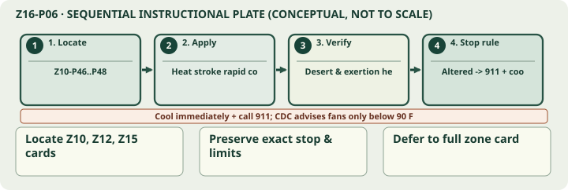

Z16-P06 · Field reference atlas · New manuscript
Extreme Heat Stroke Cooling and Indoor Fan Limit Cross-Reference
Align rapid heat-stroke cooling, CDC indoor fan limits, and desert, urban heat triggers across Z10, Z12, and Z15.
When it applies · Summer heat waves, power outages with high indoor heat, and desert or heavy-exertion travel.
Equipment · Full offline reader (Z10, Z12, Z15), primary zone cards, and local emergency and agency references.

Actions
- Recognize heat stroke (confusion, altered alertness, collapse, very high body heat) as a life-threatening emergency requiring immediate 911 activation AND rapid cooling simultaneously (Z10-P46, Z12-P30).[A01, M27, X07]
- Use cold-water immersion when safely accessible and airway-protected, or continuous water dousing plus brisk airflow, and never force oral fluids into a confused or vomiting patient (Z10-P46).[A01, M27]
- Apply CDC indoor heat guidance in Z15-P37: indoor electric fans are advised only below 90 F; move to a cooler air-conditioned shelter or cooling center when indoor temperatures climb above safe limits.[A01, D21]
Failure recognition · Delaying active cooling while awaiting EMS, giving fluids to altered patients, or relying solely on fans in >90 F rooms causes fatal organ failure.[M27, D21]
Verify · 911 + immediate cooling, airway fluid exclusion, and CDC below 90 F fan boundaries stay harmonized across zones.[M27, D21]
Stop or change course · Stop exertion immediately on dizziness, nausea, or confusion and initiate aggressive cooling plus 911.[M27, X07]
Evidence and editorial notes
- A01 · FEMA / Ready.gov · Make a Plan (current web edition)
- Section: Cross-zone emergency prioritization and stop-threshold preservation · Conditions: Synthesizing Z01-Z15 emergency decision summaries in Z16
Support: Condensed emergency references must retain exact life-safety priorities, evacuation triggers, and call-911 thresholds from upstream primary guidance.
Limitations: Any summary omitting an upstream exception, stop rule, or specialist hold is invalid and must defer to the full zone card. · Conflicting evidence: None noted.
Editorial note: Governs Z16 emergency cross-reference fidelity. · Specialist reviewer: Emergency management and editorial QA reviewer
Primary source · checked 2026-11-24 - D21 · CDC · About Heat and Your Health (2025-07-25)
- Section: Stay Cool: indoor fan limits · Conditions: Indoor heat protection; general public CDC guidance
Support: CDC advises indoor fans only below 90°F; seek cooling and avoid fan-only protection in hotter rooms.
Limitations: Humidity, health and local public-health messaging still matter. This is not a safety threshold or active heat-stroke treatment. · Conflicting evidence: See A02 claim audit for boundaries.
Editorial note: Added in A02 to separate a consequential source boundary. · Specialist reviewer: Public health and heat medicine
Primary source · checked 2026-11-25 - M27 · CDC NIOSH · Heat-related Illnesses (current web edition)
- Section: Heat stroke: symptoms and first aid · Conditions: Suspected heat stroke; initiate emergency activation and cooling together
Support: Call EMS and cool immediately. Select cold-water immersion or cooling with water and airflow based on safe access and airway protection.
Limitations: Exertional and classic heat stroke and vulnerable patients warrant specialist cooling protocol review. Avoid oral fluid in impaired alertness. · Conflicting evidence: See A02 claim audit for boundaries.
Editorial note: Added in A02 to separate a consequential source boundary. · Specialist reviewer: Emergency medicine and heat illness
Primary source · checked 2026-11-24 - X07 · NPS · Death Valley Safety (Desert Travel and Heat) (current web edition)
- Section: Death Valley Safety > Desert Heat, Dehydration, Flash Floods and Vehicle Breakdown · Conditions: Arid desert travel, canyon country and extreme summer heat
Support: Desert heat accelerates fluid and electrolyte loss rapidly, temperatures inside parked vehicles spike to fatal levels within minutes, dry washes flash-flood from distant storms and staying with a disabled road vehicle is generally safer than walking into extreme heat.
Limitations: Cell service is widely absent across desert basins; water needs can exceed 1 gallon/day dramatically during heat. · Conflicting evidence: None; aligns with CDC-HEAT and NWS-HEAT.
Editorial note: Core desert-environment evidence across Z12 heat/arid cards. · Specialist reviewer: Desert safety and emergency medicine
Primary source · checked 2026-11-24
Source lineage · New manuscript (Z16 P20 emergency index) · Classification · New manuscript.